zabbix入门之配置邮件告警 邮件环境搭建 使用本地邮箱账号发送邮件
zabbix-server 端安装 mailx 、sendmail或者psotfix 服务，系统默认安装好了postfix
1 2 3 4 5 6 7 8 9 10 11 # 安装sendmail，并加入开机自启。 yum -y install sendmail systemctl start sendmail systemctl enable sendmail # 开启postfix并加入开机自启。 systemctl start postfix systemctl enable postfix # 安装mailx yum -y install mailx
测试邮件发送
1 2 echo "zabbix test mail" | mail -s "zabbix" xxx@163.com echo "邮件内容" |mail -s "邮件标题" 收件人邮件地址
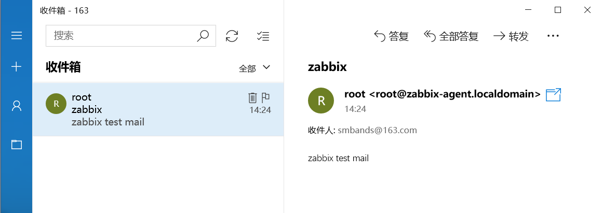
使用外部邮箱账号发送邮件 1 2 3 4 5 6 7 8 9 10 11 12 # 卸载sendmail服务 rpm -qa |grep sendmail sendmail-8.14.7-5.el7.x86_64 rpm -e sendmail-8.14.7-5.el7.x86_64 # 关闭postfix systemctl stop postfix systemctl disable postfix # 安装mailx邮件服务 yum -y install mailx systemctl start mailx && systemctl enable mailx
配置zabbix-server端外部邮箱
1 2 3 4 5 6 7 8 vim /etc/mail.rc # 在底部添加以下内容 set from=xxx@163.com # 发件人邮箱地址 set smtp=smtp.163.com:25 # 发件人smtp服务 set smtp-auth-user=xxx@163.com #发件人登录邮箱的用户名 set smtp-auth-password=123456 # 发件人客户端授权密码 下面介绍怎么设置 set smtp-auth=login #方式
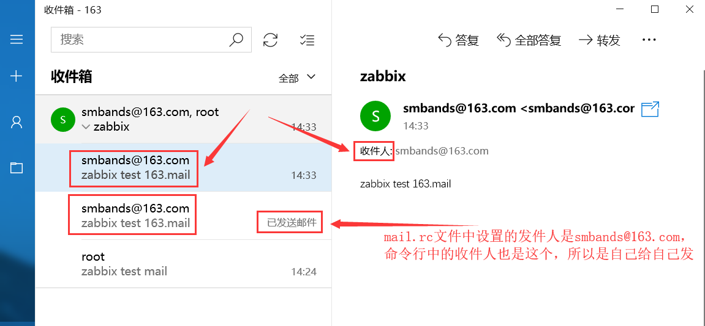
创建邮件发送脚本 1 2 3 4 5 vim /etc/zabbix/zabbix_server.conf # 找到下面这行，记下报警脚本的路径，若注释则取消注释。 AlertScriptsPath=/usr/lib/zabbix/alertscripts cd /usr/lib/zabbix/alertscripts
1 2 3 4 5 6 7 8 9 10 11 12 13 14 vim mail.sh #!/bin/bash SENT_TO=$1 SENT_SUBJECT=$2 SENT_CONTENT="/tmp/alert_$$.tmp" echo "$3 " >$SENT_CONTENT dos2unix $SENT_CONTENT mailx -s "$SENT_SUBJECT " $SENT_TO <$SENT_CONTENT
1 2 # 脚本中的dos2unix，需要主机中存在dos2unix组件，没有的话需要下载。 yum -y install dos2unix
测试邮件发送脚本 1 2 3 cd /usr/lib/zabbix/alertscripts ./mail.sh "收件人邮箱" "邮件标题" "邮件内容" ./mail.sh "859940668@qq.com" "zabbix mail script test" "测试成功"
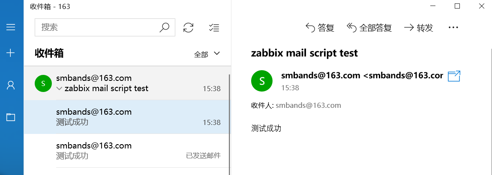
配置zabbix服务端邮件报警 创建报警媒介类型 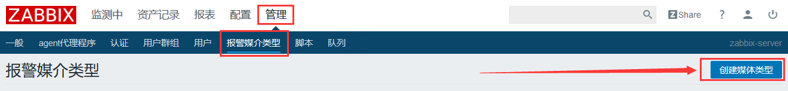
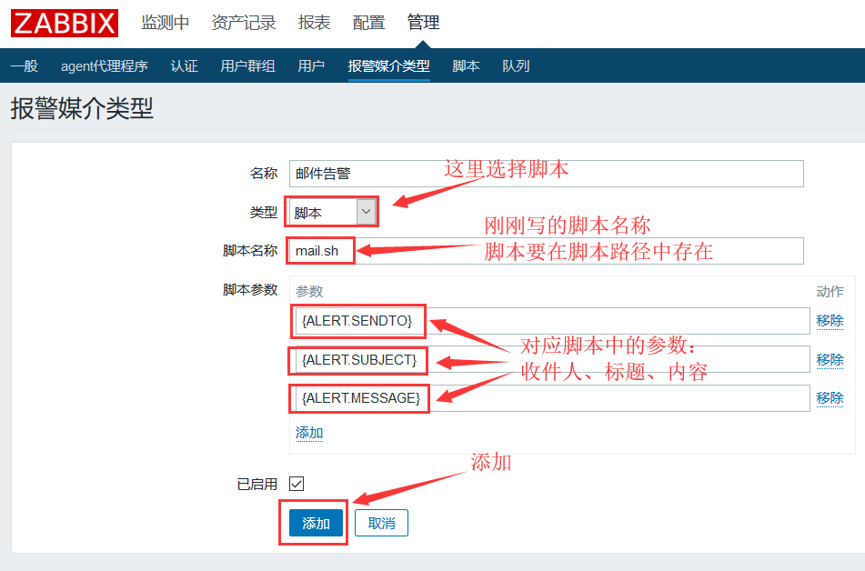
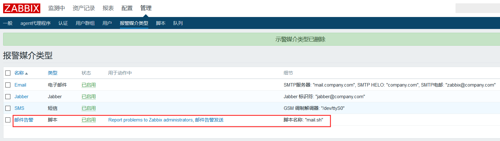
定义用户使用报警媒介 选择一个用户
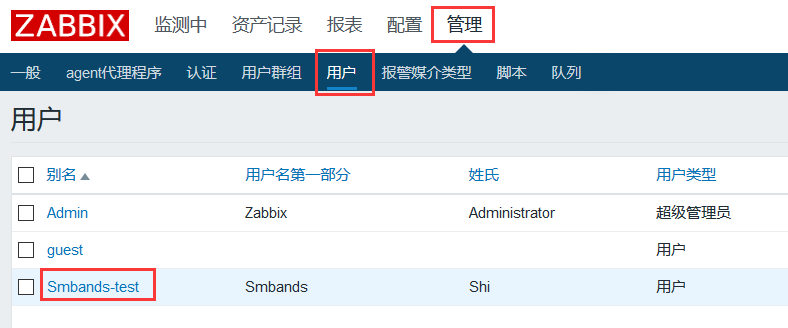
找到并点击报警媒介的标签，点击添加报警媒介
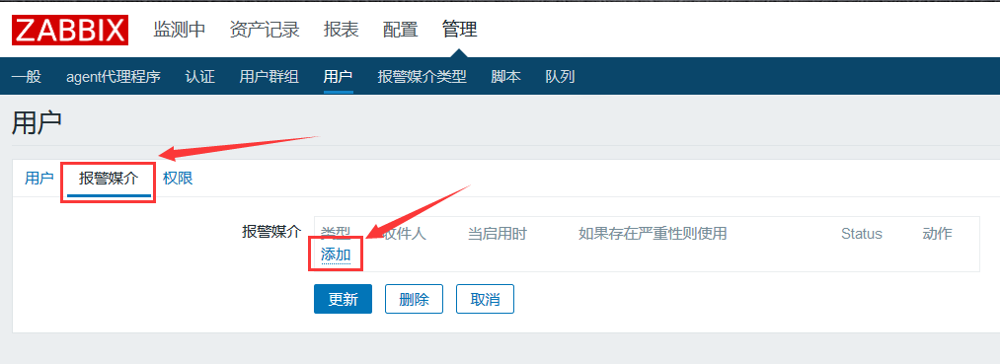
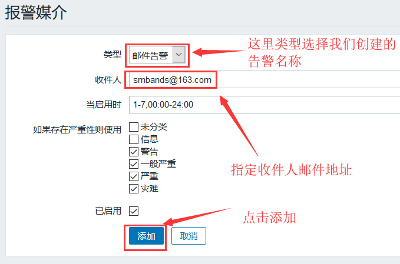
点击更新
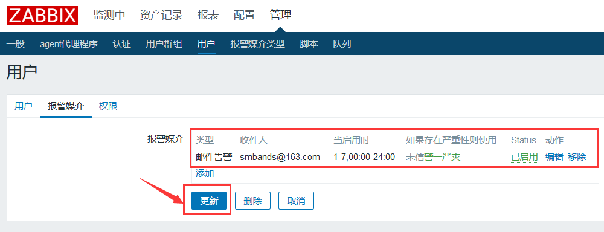
为触发器创建一个动作 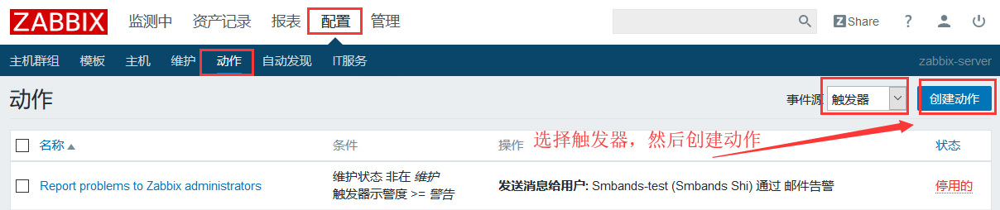
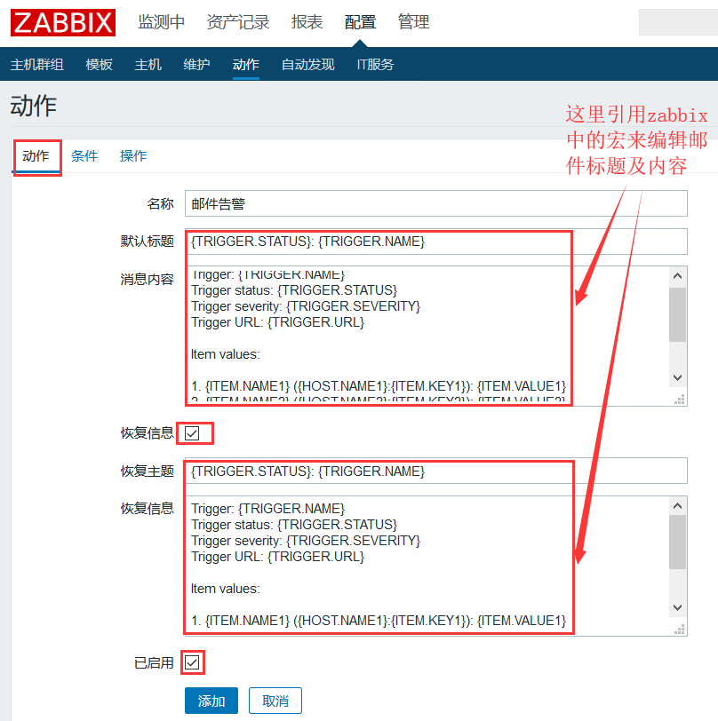
修改“默认标题”、“消息内容”、“恢复主题”、“恢复信息”中的内容，使邮件标题和内容更直观。
1 2 3 4 5 6 7 8 9 10 11 12 13 14 15 16 17 18 19 20 21 22 23 24 25 26 默认标题：故障{TRIGGER.STATUS},服务器:{HOSTNAME1}发生:{TRIGGER.NAME}故障! 消息内容： 告警主机:{HOSTNAME1} 告警地址:{IPADDRESS} 告警时间:{EVENT.DATE}{EVENT.TIME} 告警等级:{TRIGGER.SEVERITY} 告警信息: {TRIGGER.NAME} 告警项目:{TRIGGER.KEY1} 问题详情:{ITEM.NAME}:{ITEM.VALUE} 当前状态:{TRIGGER.STATUS}:{ITEM.VALUE1} 事件ID:{EVENT.ID} 恢复主题：恢复{TRIGGER.STATUS},服务器:{HOSTNAME1}: {TRIGGER.NAME}已恢复! 恢复信息： 告警主机:{HOSTNAME1} 告警地址:{IPADDRESS} 告警时间:{EVENT.DATE}{EVENT.TIME} 告警等级:{TRIGGER.SEVERITY} 持续时间:{EVENT.AGE} 恢复时间:{EVENT.RECOVERY.TIME} 告警信息: {TRIGGER.NAME} 告警项目:{TRIGGER.KEY1} 问题详情:{ITEM.NAME}:{ITEM.VALUE} 当前状态:{TRIGGER.STATUS}:{ITEM.VALUE1} 事件ID:{EVENT.ID}
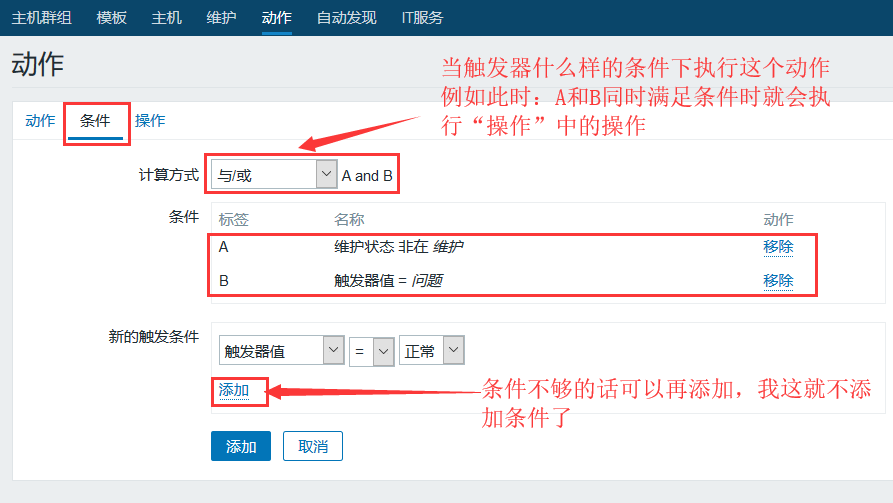
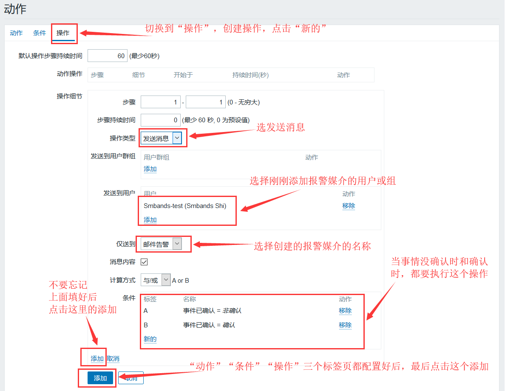
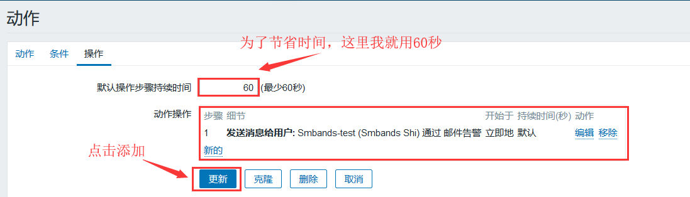
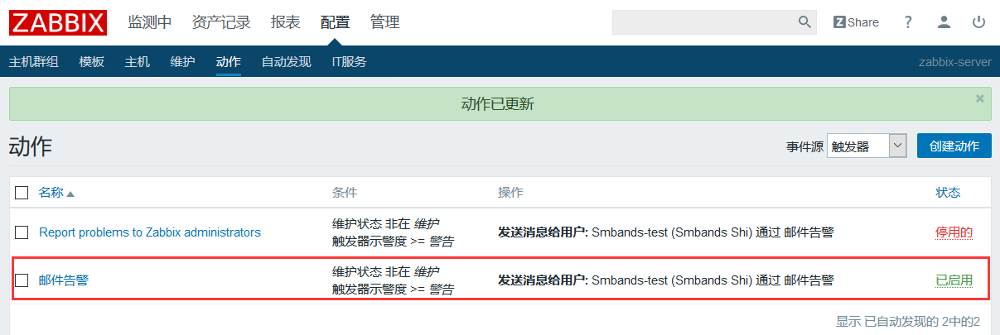
测试 关闭FTP服务触发告警 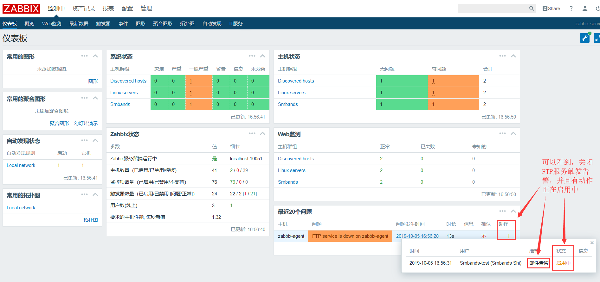
成功收到告警邮件
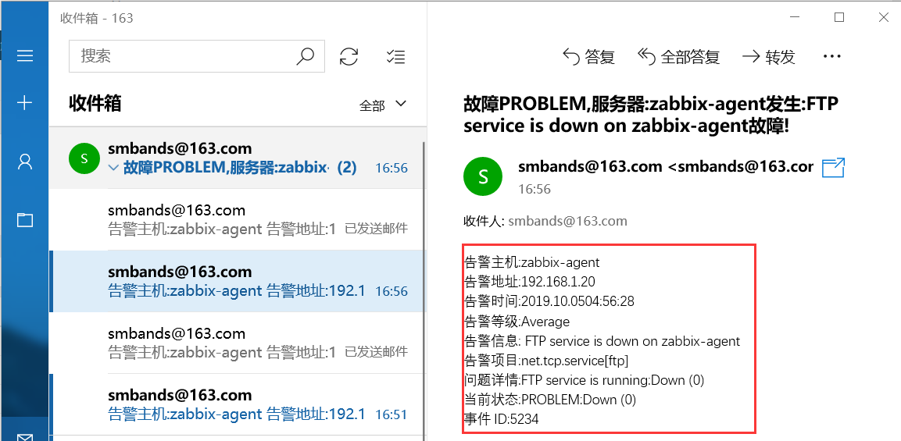
开启FTP服务 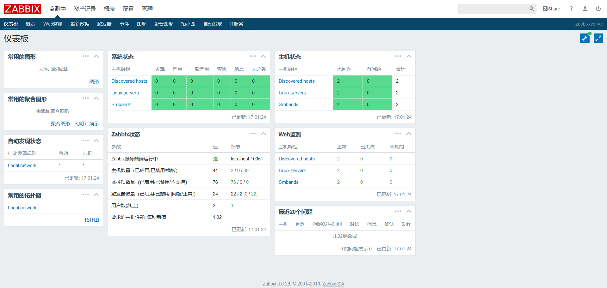
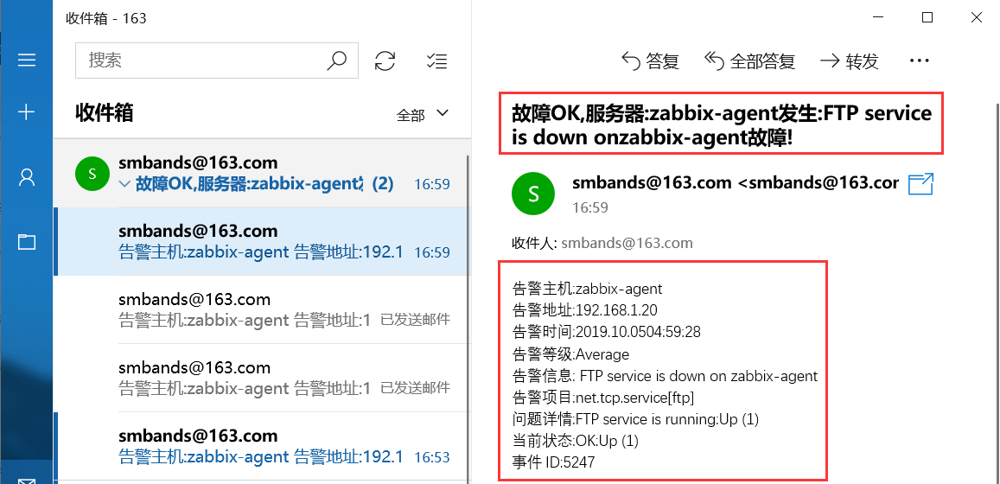